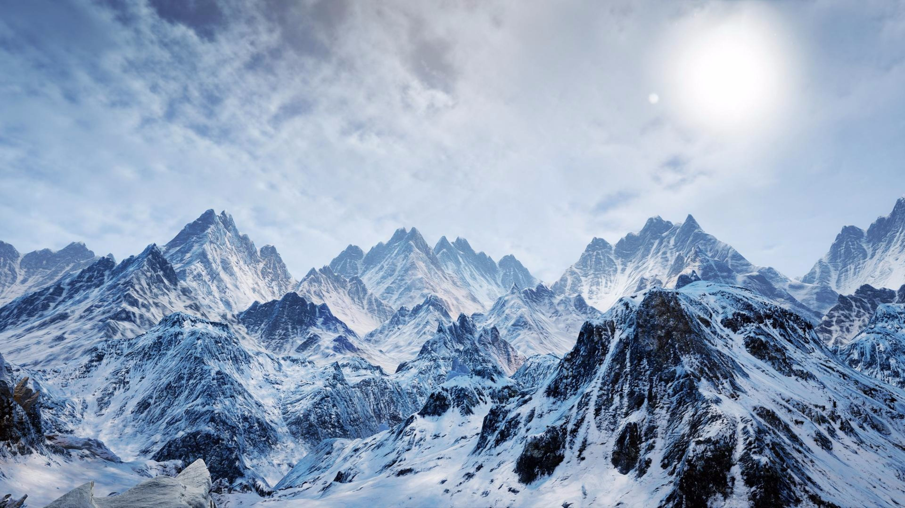
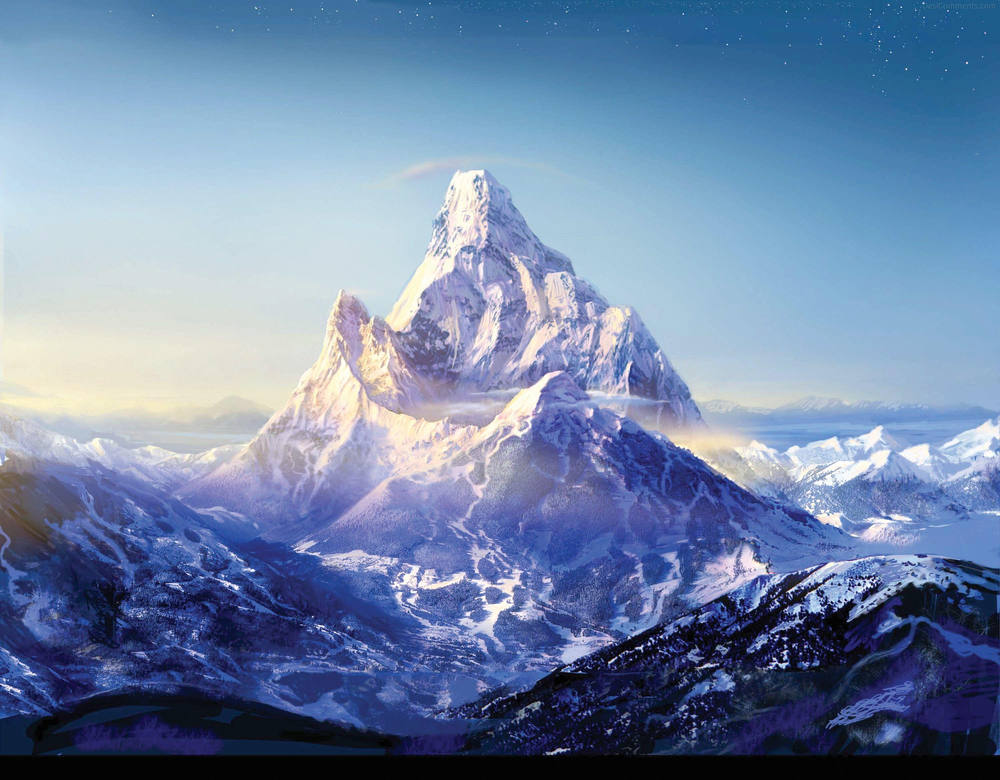

The Himalayas are much more rightly called the "Roof of the World." Probably one of the most incredible mountain ranges on this earth, the Himalayan range stretches over 2,400 km (1,500 miles) across India, Nepal, Bhutan, China, and Pakistan to form a natural barrier separating the Indian subcontinent from the Tibetan Plateau. The Himalayas host some of the highest peaks on the planet, including Mount Everest, at 8,848.86 meters (29,031.7 feet), which is the highest mountain in the world.
The formation of the Himalayas began around 50 million years ago due to the collision between the Indian tectonic plate and that of Eurasia. In fact, it is continuous tectonic activity which has transformed this range into a land of towering peaks, deep valleys, glaciers, and high-altitude plateaus. The Himalayas constitute not only a geographical marvel but also an integral part of the Earth's climate system, acting as a barrier that influences weather patterns and monsoon systems across Asia.
This great mountain range is divided into several subranges, all dissimilar in their nature. The Greater Himalayas or the Inner Himalayas host the loftiest peaks, the well-known Everest, K2, and Kanchenjunga. It comprises steep mountains, glaciated and snow-covered terrain. On the south side lie the Lesser Himalayas, mostly gentle and with heavy growths of forests and staircased farms. The Outer Himalayas, or the Sub-Himalayas, are the foothills, hosting teeming biodiversity and human settlements.
One of the most striking features of the Himalayas is its rich ecological diversity. The region supports a wide variety of ecosystems, ranging from tropical and subtropical forests at lower elevations to alpine meadows and glacial zones at higher altitudes. The Himalayas comprise a remarkable variety of flora and fauna, most of which are found only in this region. The elusive snow leopard, the red panda, and the Himalayan tahr are species that can survive under such harsh conditions. Besides, there are thousands of plant species in the region, including rare medicinal herbs which have been used in traditional medicine for ages.
The Himalayas also figure in the most important aspects of water systems. Snow and glaciers, blanketing the higher altitudes, act like natural reservoirs, feeding major rivers such as the Ganges, the Brahmaputra, and the Indus. These rivers provide water to over a billion people across South Asia, making the region vital for agriculture, drinking water, and daily life. However, all these water sources are under great threat from climate change as a result of the rapid retreat of glaciers due to rising temperatures.
Culturally, the Himalayas are of profound significance to people who live in their shadow. Many consider the mountain range as sacred, especially in Hinduism and Buddhism. Mount Kailash, located in the western Himalayas, is considered a sacred pilgrimage site in Hinduism, believed to be the home of Lord Shiva. The mountains have also been a center of Buddhist meditation and spiritual practices for many centuries. The region is home to numerous monasteries, temples, and sacred lakes, making it a hub for spiritual seekers from around the world.
The people of the Himalayas are diverse, with many ethnic groups calling the region home. The Sherpas of Nepal, for instance, are great mountaineers and know their way through the harsh Himalayas. The Tibetans, Buddhists, Hindus, and indigenous people have all created rich cultural traditions that reflect their deep connection to the mountains and natural surroundings. Despite their isolation in some areas, these communities have developed vibrant cultures, with unique languages, clothing, festivals, and culinary traditions.
The Himalayas are not without challenges, though. Climate change is one of the major issues that the region is faced with, as rising temperatures melt glaciers at unprecedented rates. This not only threatens the water supply for millions but also increases the risk of landslides, avalanches, and flooding. Deforestation, mining, and infrastructure expansion for tourism further the degradation of the environment. The balance between the conservation of the region and the growing tourism industry is a very complex issue.
Despite these challenges, the Himalayas continue to captivate and inspire people from around the world. Whether for their breathtaking natural beauty, their cultural and spiritual significance, or the thrilling adventure of climbing their towering peaks, the Himalayas remain a symbol of both the power and fragility of our planet. In this regard, preservation of this majestic range is very important, not only for the people living there but also for the entire world, while standing at the crossroads of an uncertain future.
EXPLORE MORE